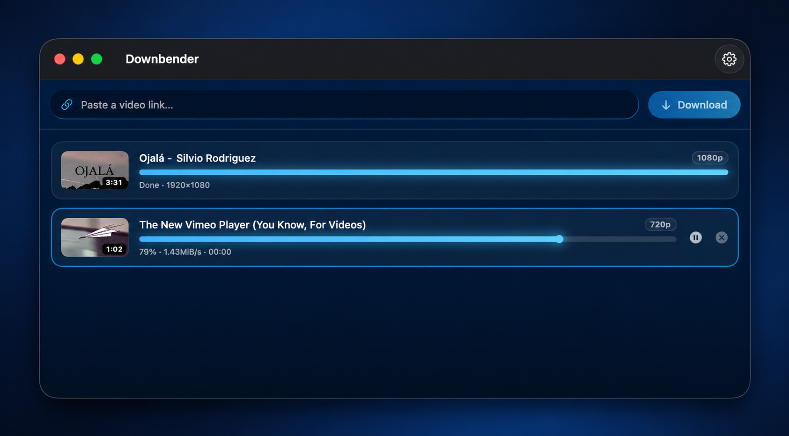

Downbender
The last download master. Download videos or extract MP3 — natively on your Mac.
⬇ Download for MacFree & open source · macOS 26+ · Apple Silicon

Install
- Open Downbender.dmg and drag Downbender into Applications.
- First launch only: macOS blocks apps that are not notarized by Apple. Go to System Settings → Privacy & Security and click Open Anyway.
What it does
- Video up to 1080p (MP4) or MP3 audio — YouTube first and foremost, plus many other sites (still maturing).
- Download queue with progress, pause/resume, clipboard detection.
- Self-contained: the download engine ships inside the app and can update itself.